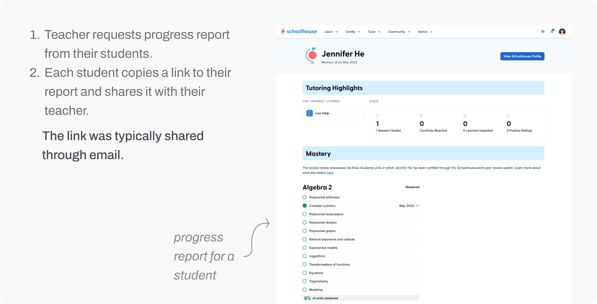
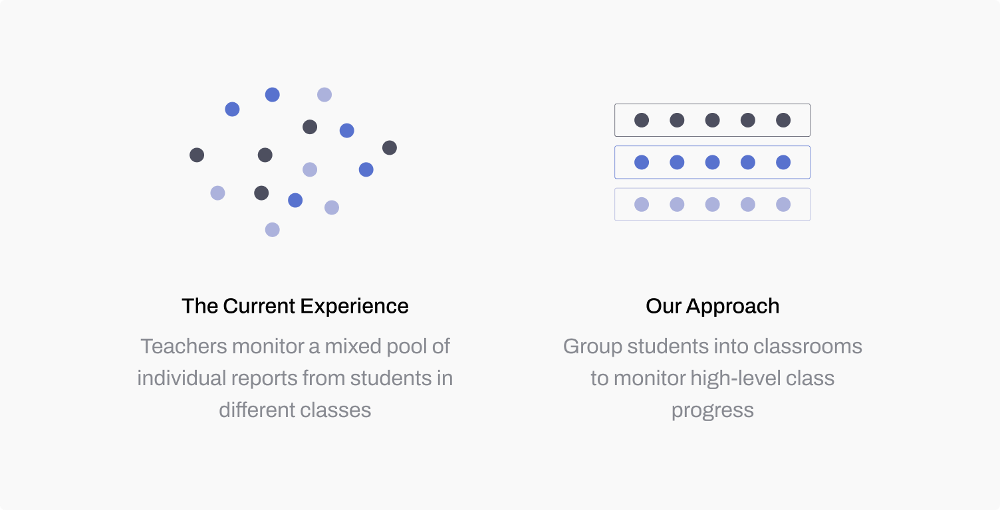
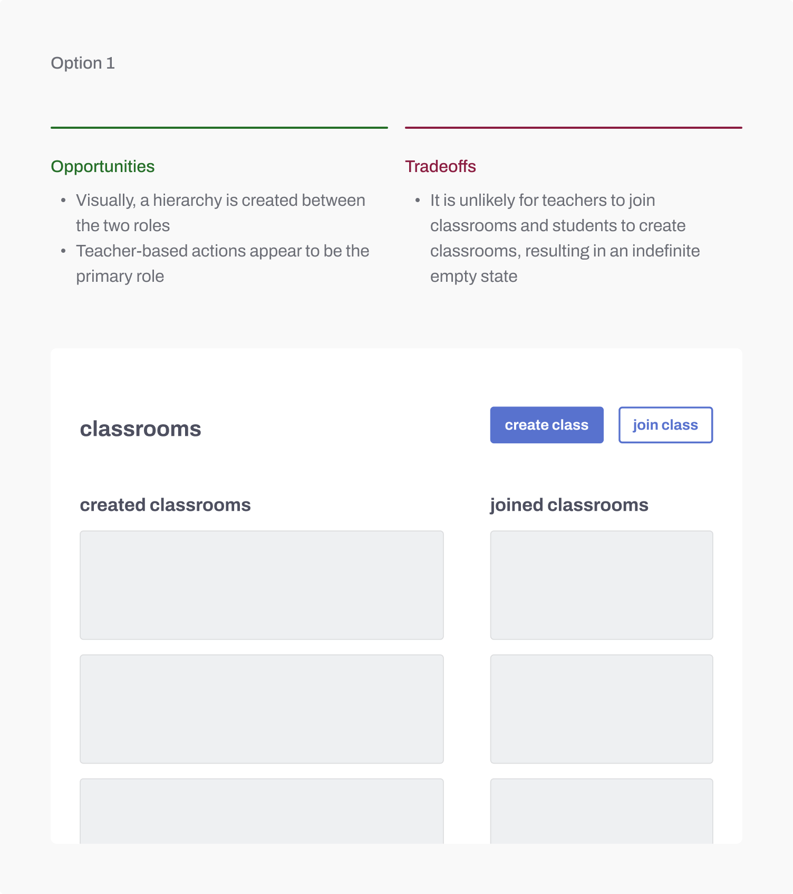
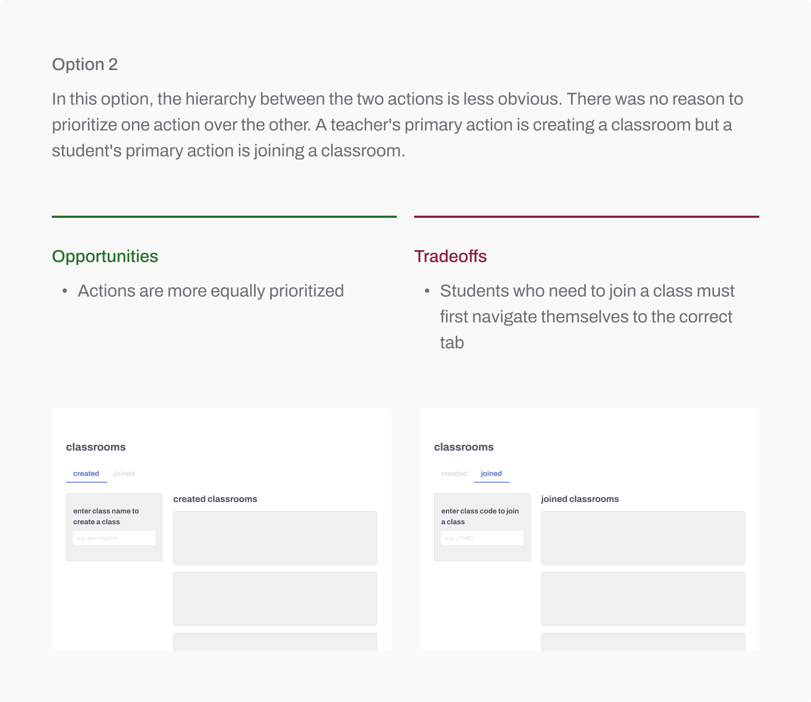
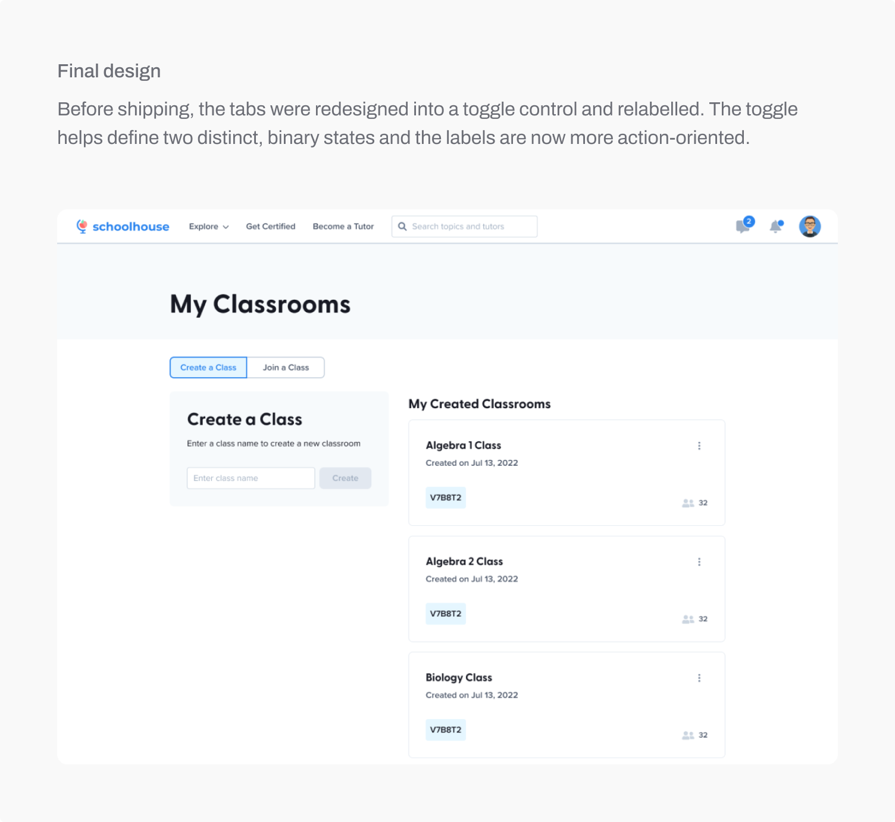
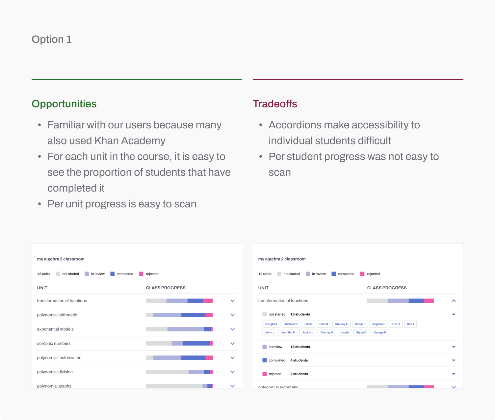
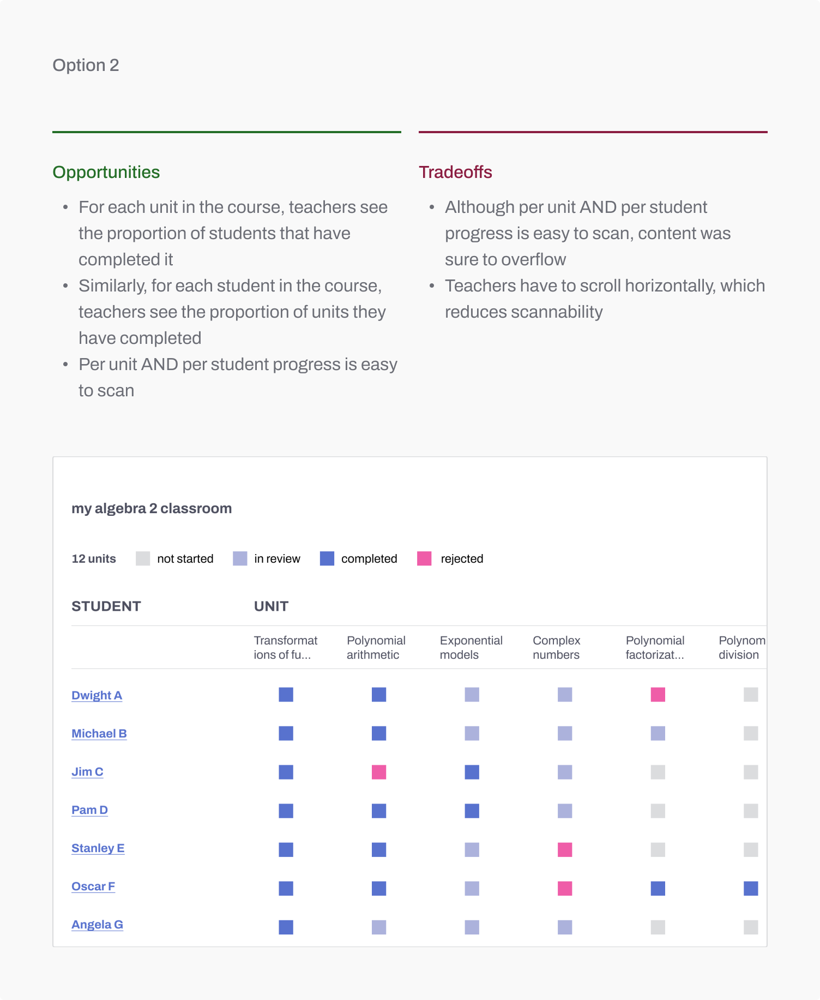
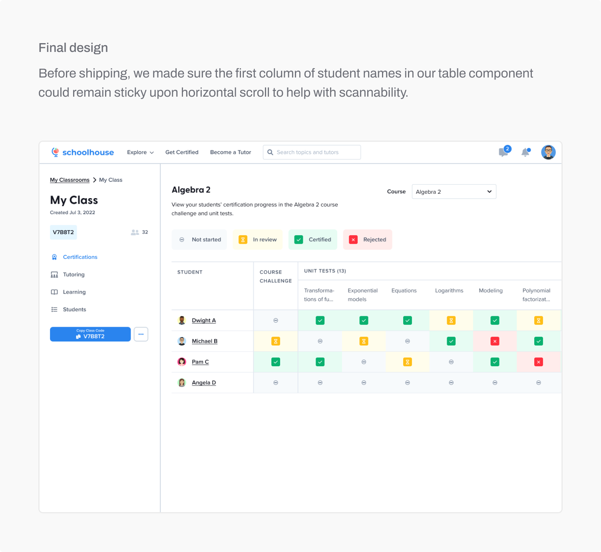
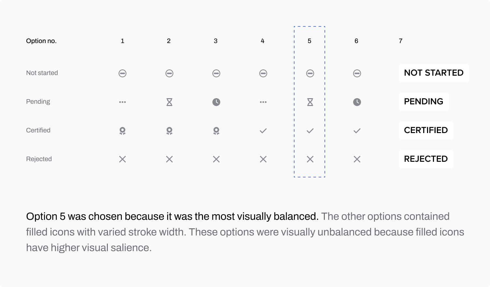
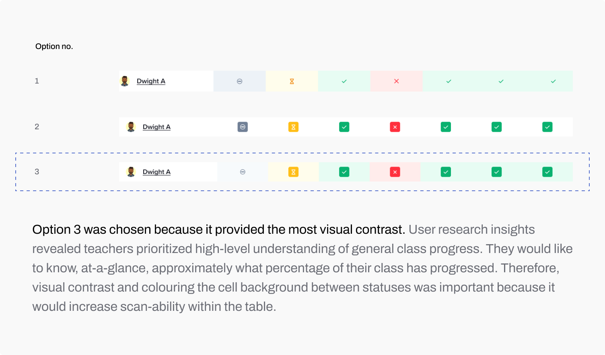

Timeline
4 weeks
Role
Product Designer
Company
schoolhouse.world
Khan World School
Team
Product Manager
Engineer (2)
Design Manager
Schoolhouse.world is a Sal Khan (Khan Academy) ed-tech initiative that builds teaching tools. Khan World School (KWS) is an online school of 200+ students and teachers.
Both students and teachers at KWS use Schoolhouse.world for learning and teaching.
KWS encourages a flipped classroom approach. Teachers deliver synchronous daily seminars but students engage in self-paced mastery of course material.



Most of the time, teachers only required a high-level understanding of overall class progress. Currently, teachers received individual progress reports from every student they taught, which meant the information they reviewed contained too much detail.
Self-paced learning meant students must be continuously monitored. With the current experience, teachers had to request updated progress reports from every student every time they wanted an update.
Because most teachers taught more than one class, they currently monitored a mixed pool of individual progress reports from students in different classes. Classrooms would group students by class. We knew teachers typically relied on class rosters (lists of students in each of their classes) to keep track of their students and there was no need to change existing systems.









At one point in this project, I didn’t feel comfortable sharing my work with team members because I felt like I hadn’t made any decisions and was still exploring options. Upon sharing however, I received very valuable and directional feedback.
At one point in this project, I didn’t feel comfortable sharing my work with team members because I felt like I hadn’t made any decisions and was still exploring options. Upon sharing however, I received very valuable and directional feedback.